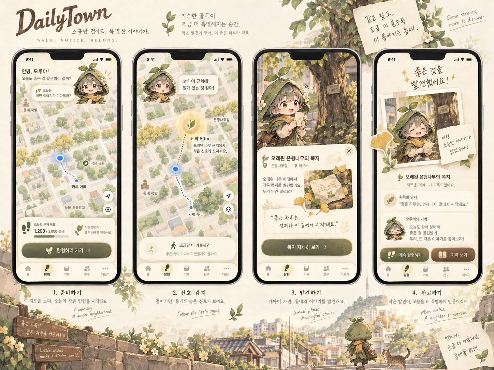
Overall UX / Visual Baseline
Map-first Explore, cream/paper surface, botanical neighborhood framing, discovery → record → continue 흐름의 기준.
새 디자인 탐색이 아니라, Design Baseline v2와 승인된 production/reference 자산을 한 화면에서 검토하기 위한 정적 showcase입니다.
Explore 흐름과 전체 톤을 잠그는 승인 기준 이미지입니다.

Map-first Explore, cream/paper surface, botanical neighborhood framing, discovery → record → continue 흐름의 기준.
현재 승인된 surface 언어를 빠르게 비교하는 reference pass입니다.
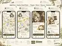
Prepare / Detect / Discover / Resolved의 map-first 시각 위계와 paper overlay 방향.
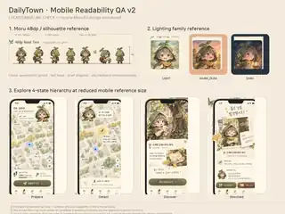
정적 QA 참고. 실제 outdoor R-B PASS를 대신하지 않습니다.
relationship notebook와 A3 journal의 paper/card surface 및 정보 위계 기준.
canonical identity는 변경하지 않고 usage-context production crop만 사용합니다.
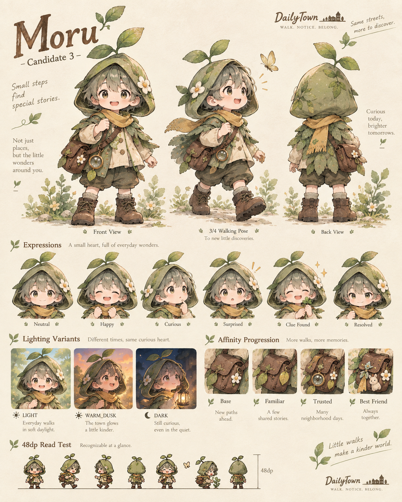
정면/걷기/후면, 표정, sprout·hood·scarf·satchel·boots identity의 최종 authority.
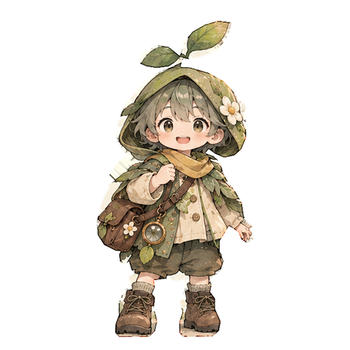
map avatar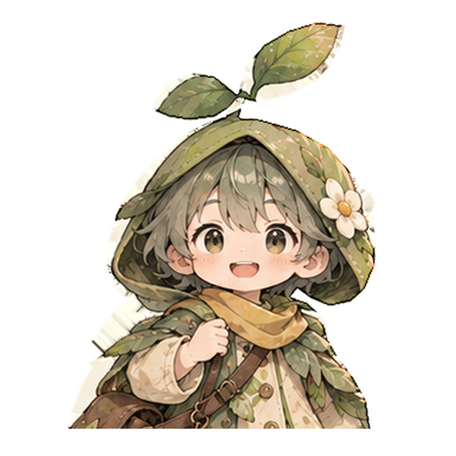
HUD portrait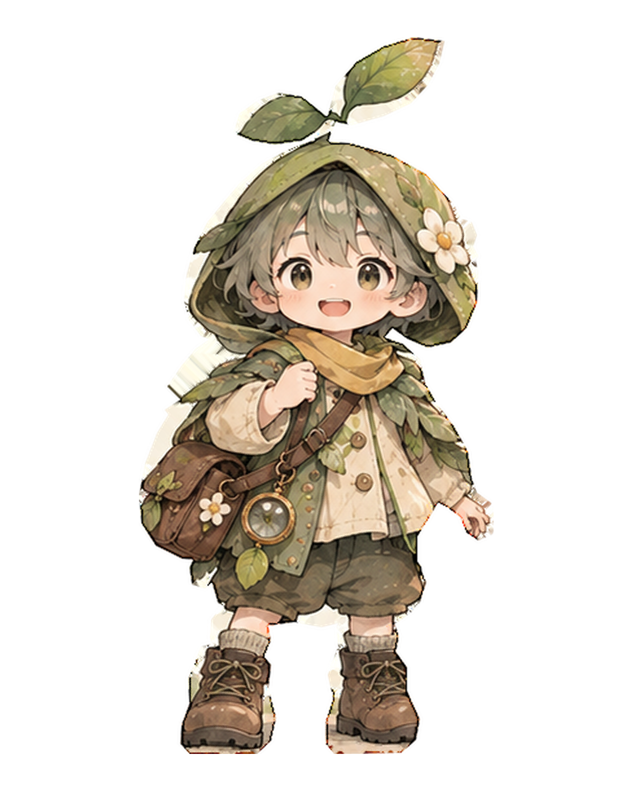
result large실제 앱 context에 맞춘 투명 raster derivation.
첫 시나리오의 장소·단서·기억 asset family를 같은 자리에서 확인합니다.
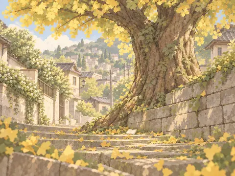
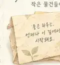
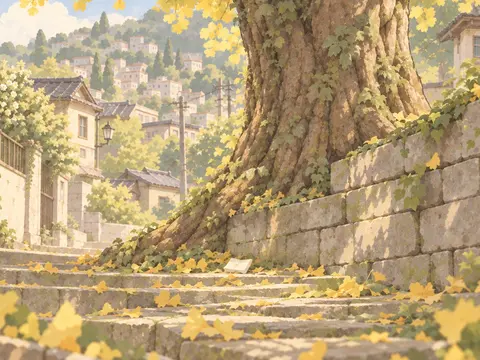
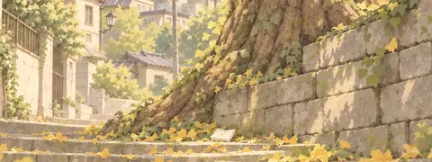
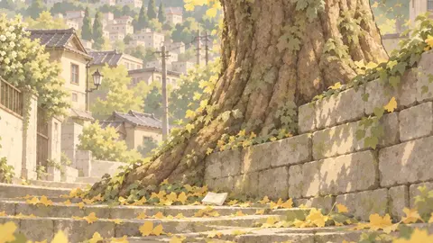
Place → clue → memory → Records / Companion reuse 관계를 확인하기 위한 inspectable refs입니다.
최종 선택된 launcher identity. 현재 launcher는 mark-only입니다.
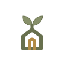
두 잎 sprout + town/door arch + path entrance를 결합한 compact mark. Moru face/body는 브랜드 마크에 사용하지 않습니다.
승인된 Moru raster를 재사용한 review-only motion preview입니다.
Preview에서는 반복 비교를 위해 reaction이 loop합니다. Runtime 계약은 clue_found/resolved가 one-shot 후 static semantic state를 유지합니다. Reduced Motion에서는 transform이 비활성화됩니다.